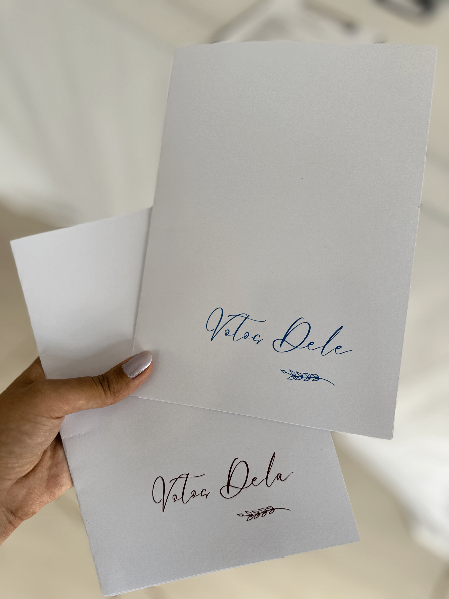

Fotografia · Casamento
Os detalhes contam tudo.
Registro dos detalhes, decoração e momentos que fazem a celebração ser única.
Fotografia e stories para celebrar histórias reais — do “sim” no altar à última música da festa.

A SRFilms transforma celebrações em narrativas visuais cheias de emoção, beleza e personalidade.
Registramos os grandes momentos e os pequenos detalhes: os olhares, os abraços, os votos, a pista cheia e tudo aquilo que torna cada história única. Fotografia, vídeo e conteúdo vertical com um olhar cinematográfico.
Este é um texto de apresentação provisório. Antes de publicar, personalize com sua história, experiência e o jeito que você gosta de contar cada celebração.
Uma seleção de estilos para casamentos, festas e eventos.
Registro dos detalhes, decoração e momentos que fazem a celebração ser única.

Registro dos detalhes, decoração e momentos que fazem a celebração ser única.

Registro dos detalhes, decoração e momentos que fazem a celebração ser única.

Stories e reels verticais para compartilhar a emoção enquanto ela acontece.
Stories e reels verticais para compartilhar a emoção enquanto ela acontece.
Stories e reels verticais para compartilhar a emoção enquanto ela acontece.
Cobertura com sensibilidade e intenção, respeitando o ritmo do evento e entregando lembranças que você vai querer rever e compartilhar.
Fotografia de casamentos, aniversários, festas e eventos, com atenção aos retratos, detalhes e momentos espontâneos.
Conversar sobre fotografia ↗Stories e reels verticais para compartilhar bastidores, entradas, brindes, pista de dança e os melhores momentos quase em tempo real.
Ver stories & reels ↗Do primeiro contato à entrega, cada etapa é pensada para que você aproveite o momento enquanto cuidamos dos registros.
Conversamos sobre a data, o local, o estilo da celebração e o que é mais importante para vocês.
Alinhamos a cobertura, os momentos-chave e a linguagem visual desejada.
Registramos a celebração com discrição, criatividade e atenção às emoções.
Selecionamos e editamos fotos, filmes e conteúdos conforme o pacote combinado.
Conte a data, o local e o tipo de evento que está planejando. Vamos conversar sobre uma cobertura que preserve a emoção e os detalhes desse dia especial.
Falar pelo WhatsApp ↗